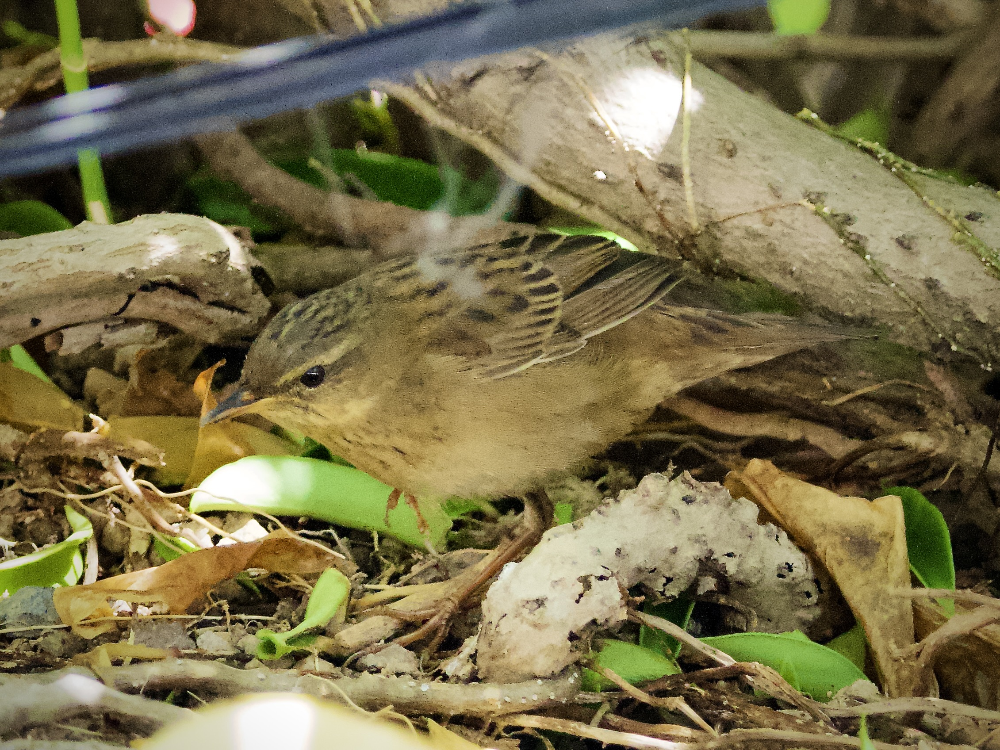

Pallas's Grasshopper Warbler
Helopsaltes certhiola
Order: Passeriformes
Family: Locustellidae

A warbler the colour of 200-year-old parchment, with streaking on the back and breast. Found on the floor in dense bushes. For some reason, I have a particular liking to a grasshopper warbler's tail. First, although brown it is streaky and varied in undertones, thus interesting to stare at for long periods of time. Second, the tail feathers are not smooth and flat like most songbirds, but rather quite scruffy and look natural and cozy. Munias also have this but their feathers are much thinner and more papery. Third, the tail base is supple and meaty and I really want to squeeze it. Anyways, enough creepy ahh comments about them.